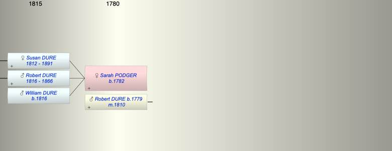
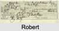

| [Index] |
| Sarah PODGER (1782 - ) |
|  |
|  |
| b. 1782 at Langport, Somerset |
| m. 09 Mar 1810 Robert Pepperell DURE (1779 - ) at Langport |
| Near Relatives of Sarah PODGER (1782 - ) | ||||||
| Relationship | Person | Born | Birth Place | Died | Death Place | Age |
| Father in Law | Nicholas DURE | |||||
| Mother in Law | Hannah PEPPERELL | 1749 | Slapton | |||
| Self | Sarah PODGER | 1782 | Langport, Somerset | |||
| Husband | Robert Pepperell DURE | 1779 | Stokenham, Devon | |||
| Daughter | Susan DURE | abt 1812 | 1891 | Plympton St Mary | 79 | |
| Son | Robert DURE | 1816 | Langport | 16 Jun 1866 | Coleridge, Devon | 50 |
| Son | William DURE | 1816 | ||||
| Son in Law | Nicholas John HAMMETT | 1812 | Plymouth | 1873 | Plympton St Mary | 61 |
| Daughter in Law | Elizabeth HARLEY | |||||
| Grandson | Robert H HAMMETT | 1838 | Stokenham | |||
| Granddaughter | Sarah Agnes HAMMETT | 1841 | Plymton | 1880 | 39 | |
| Grandson | Stephen HAMMETT | 16 Jun 1845 | Plympton St Mary | 29 Apr 1915 | Plymouth | 69 |
| Granddaughter | Eliz DURE | 1841 | South Pool, Devon | |||
| Granddaughter | Mary Grace Hurley DURE | 1843 | Stokenham | |||
| Grandson | John Harley DURE | 1845 | Stokenham | |||
| Events in Sarah PODGER (1782 - )'s life | |||||
| Date | Age | Event | Place | Notes | Src |
| 1782 | Sarah PODGER was born | Langport, Somerset | ex 1861 census | ||
| 09 Mar 1810 | 28 | Married Robert Pepperell DURE (aged 31) | Langport | Note 1 | |
| abt 1812 | 30 | Birth of daughter Susan DURE | various | ||
| 1816 | 34 | Birth of son Robert DURE | Langport | ex 1851 census | |
| 1816 | 34 | Birth of son William DURE | Note 2 | ||
| 16 Jun 1866 | 84 | Death of son Robert DURE (aged 50) | Coleridge, Devon | Note 3 | |
| 1891 | 109 | Death of daughter Susan DURE (aged 79) | Plympton St Mary | Note 4 | |
| Death of husband Robert Pepperell DURE | Note 5 | ||||
| Personal Notes: |
|
Two baptisms at Langport ex Ancestry
15 Dec 1782 dau of William and Mary 24 Oct 1783 dau of Robert and Sophia |
| Created on a Mac™ using iFamily for Mac™ on 15 Sep 2023 |